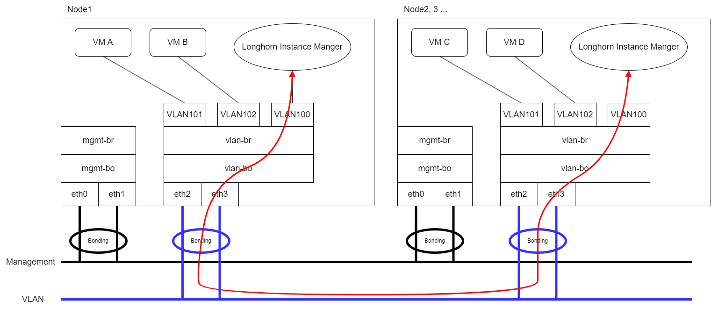
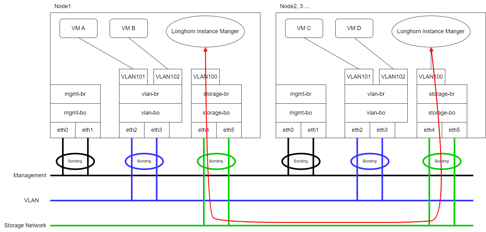

Storage Network
SUSE Virtualization uses SUSE Storage to provide block device volumes for virtual machines and pods. If you want to isolate SUSE Storage replication traffic from mgmt (the built-in cluster network) or other cluster-wide workloads, you can use a dedicated storage network for better network bandwidth and performance.
For more information, see Storage Network in the SUSE Storage documentation.
|
Prerequisites
Before you begin configuring the storage network, ensure that the following requirements are met:
-
The network switches are correctly configured, and a dedicated VLAN ID is assigned to the storage network.
-
The cluster network and VLAN network are configured correctly. Ensure that both networks cover all nodes and are accessible.
-
The IP range of the storage network has the following characteristics:
-
Uses the IPv4 CIDR format
-
Does not conflict or overlap with Kubernetes cluster networks
The following addresses are reserved:
10.42.0.0/16,10.43.0.0/16,10.52.0.0/16, and10.53.0.0/16. -
Covers the requirements of the cluster
The required number of IP addresses is calculated using the following formula:
Required number of IPs = (Number of nodes * 2) + (Number of disks * 2) + Number of images to be downloaded or uploadedExample: If a cluster has five nodes with two disks each, and ten images are to be uploaded simultaneously, the IP range should be greater than or equal to
/26(calculation: (5 x 2) + (5 x 2) + 10 = 30). -
Excludes IP addresses that SUSE Storage pods and the storage network must not use, such as addresses reserved for RWX volumes, the gateway, and other components.
-
-
The Whereabouts CNI is installed correctly.
You can check if the
ippools.whereabouts.cni.cncf.ioCRD exists in the cluster using the commandkubectl get crd ippools.whereabouts.cni.cncf.io.If an empty string is returned, add the CRDs in this directory using the following commands:
kubectl apply -f https://raw.githubusercontent.com/harvester/harvester/v1.1.0/deploy/charts/harvester/dependency_charts/whereabouts/crds/whereabouts.cni.cncf.io_ippools.yaml kubectl apply -f https://raw.githubusercontent.com/harvester/harvester/v1.1.0/deploy/charts/harvester/dependency_charts/whereabouts/crds/whereabouts.cni.cncf.io_overlappingrangeipreservations.yamlThe Whereabouts CNI is not installed correctly in certain upgrade scenarios.
-
All virtual machines are stopped.
You can check the status of virtual machines using the command
kubectl get -A vmi, which should return an empty string.SUSE Virtualization sends a graceful shutdown signal to virtual machines that are stopped using the SUSE Virtualization UI. However, workloads are interrupted and remain unavailable until you manually start the virtual machines after confirming that the storage network configuration was applied successfully.
-
All pods that are attached to SUSE Storage volumes are stopped.
-
All ongoing image uploads and downloads are either completed or deleted.
SUSE Storage replication traffic routing
The routing of SUSE Storage replication traffic depends on whether virtual machine VLAN traffic and the SUSE Storage storage network share the same physical interfaces or use different ones.
-
Same physical interfaces: In the following example, both
eth2andeth3are used for virtual machine VLAN traffic and the SUSE Storage storage network. The red line indicates that SUSE Storage sends replication traffic througheth3.You must include
eth2andeth3in the cluster network and VLAN network configuration. -
Different physical interfaces: In the following example,
eth2andeth3are used for virtual machine VLAN traffic, whileeth4andeth5are used for the SUSE Storage storage network. The red line indicates that SUSE Storage sends replication traffic througheth4.You must include
eth4andeth5in the cluster network and VLAN network configuration.
storage-network setting
The storage-network setting allows you to configure the network used to isolate in-cluster storage traffic when segregation is required.
You can enable and disable the storage network using either the UI or the CLI. When the setting is enabled, you must construct a Multus NetworkAttachmentDefinition CRD by configuring certain fields.
Once the storage-network setting is applied, SUSE Virtualization performs the following actions:
-
Stops all pods that are related to SUSE Storage volumes, Prometheus, Grafana, Alertmanager, and the VM Import Controller.
-
Creates a new
NetworkAttachmentDefinitionand updates the SUSE Storage storage network setting. -
Restarts all
instance-managerandbacking-image-managerpods to apply the new network configuration.
Configuration steps
-
UI
-
CLI
|
Using the SUSE Virtualization UI to configure the |
==== Enable the storage network
-
Go to Advanced → Settings → storage-network.
-
Select Enabled.
-
Configure the VLAN ID, Cluster Network, IP Range, and Exclude fields to construct a Multus
NetworkAttachmentDefinitionCRD. -
Click Save.
==== Disable the storage network
-
Go to Advanced → Settings → storage-network.
-
Select Disable.
-
Click Save.
Once the storage network is disabled, SUSE Storage starts using the pod network for storage-related operations.
You can use the following command to configure the storage-network setting.
kubectl edit settings.harvesterhci.io storage-networkThe storage network is automatically enabled in the following situations:
-
The
valuefield contains a valid JSON string.apiVersion: harvesterhci.io/v1beta1 kind: Setting metadata: name: storage-network value: '{"vlan":100,"clusterNetwork":"storage","range":"192.168.0.0/24", "exclude":["192.168.0.100/32"]}' -
The
valuefield is empty.apiVersion: harvesterhci.io/v1beta1 kind: Setting metadata: name: storage-network value: ''
The storage network is disabled when you remove the value field.
apiVersion: harvesterhci.io/v1beta1
kind: Setting
metadata:
name: storage-network|
SUSE Virtualization considers extra insignificant characters in a JSON string as a different configuration. |
Post-configuration steps
|
SUSE Virtualization does not start virtual machines automatically. You must ensure that the configuration is correct and applied successfully, and then start the virtual machines when necessary. |
-
Verify that the
storage-networksetting’s status isTrueand the type isconfiguredusing the following command:kubectl get settings.harvesterhci.io storage-network -o yamlExample:
apiVersion: harvesterhci.io/v1beta1 kind: Setting metadata: annotations: storage-network.settings.harvesterhci.io/hash: da39a3ee5e6b4b0d3255bfef95601890afd80709 storage-network.settings.harvesterhci.io/net-attach-def: "" storage-network.settings.harvesterhci.io/old-net-attach-def: "" creationTimestamp: "2022-10-13T06:36:39Z" generation: 51 name: storage-network resourceVersion: "154638" uid: 2233ad63-ee52-45f6-a79c-147e48fc88db status: conditions: - lastUpdateTime: "2022-10-13T13:05:17Z" reason: Completed status: "True" type: configured -
Verify that the SUSE Storage pods (
instance-managerandbacking-image-manager) are ready and that their networks are correctly configured.You can inspect each pod using the following command:
kubectl -n longhorn-system describe pod <pod-name>Errors similar to the following indicate that the storage network has exhausted its available IP addresses. You must reconfigure the storage network with a sufficient IP range.
Events: Type Reason Age From Message ---- ------ ---- ---- ------- .... Warning FailedCreatePodSandBox 2m58s kubelet Failed to create pod sandbox: rpc error: code = Unknown desc = failed to setup network for sandbox "04e9bc160c4f1da612e2bb52dadc86702817ac557e641a3b07b7c4a340c9fc48": plugin type="multus" name="multus-cni-network" failed (add): [longhorn-system/backing-image-ds-default-image-lxq7r/7d6995ee-60a6-4f67-b9ea-246a73a4df54:storagenetwork-sdfg8]: error adding container to network "storagenetwork-sdfg8": error at storage engine: Could not allocate IP in range: ip: 172.16.0.1 / - 172.16.0.6 / range: net.IPNet{IP:net.IP{0xac, 0x10, 0x0, 0x0}, Mask:net.IPMask{0xff, 0xff, 0xff, 0xf8}} ....If the storage network has exhausted its available IP addresses, you might encounter similar errors when you upload or download images. You must delete the affected images and reconfigure the storage network with a sufficient IP range.
-
Verify that an interface named
lhnet1exists in thek8s.v1.cni.cncf.io/network-statusannotations. The IP address of this interface must be within the designated IP range.You can retrieve a list of SUSE Storage
instance-managerpods using the following command:kubectl get pods -n longhorn-system -l longhorn.io/component=instance-manager -o yamlExample:
apiVersion: v1 kind: Pod metadata: annotations: cni.projectcalico.org/containerID: 2518b0696f6635896645b5546417447843e14208525d3c19d7ec6d7296cc13cd cni.projectcalico.org/podIP: 10.52.2.122/32 cni.projectcalico.org/podIPs: 10.52.2.122/32 k8s.v1.cni.cncf.io/network-status: |- [{ "name": "k8s-pod-network", "ips": [ "10.52.2.122" ], "default": true, "dns": {} },{ "name": "harvester-system/storagenetwork-95bj4", "interface": "lhnet1", "ips": [ "192.168.0.3" ], "mac": "2e:51:e6:31:96:40", "dns": {} }] k8s.v1.cni.cncf.io/networks: '[{"namespace": "harvester-system", "name": "storagenetwork-95bj4", "interface": "lhnet1"}]' k8s.v1.cni.cncf.io/networks-status: |- [{ "name": "k8s-pod-network", "ips": [ "10.52.2.122" ], "default": true, "dns": {} },{ "name": "harvester-system/storagenetwork-95bj4", "interface": "lhnet1", "ips": [ "192.168.0.3" ], "mac": "2e:51:e6:31:96:40", "dns": {} }] kubernetes.io/psp: global-unrestricted-psp longhorn.io/last-applied-tolerations: '[{"key":"kubevirt.io/drain","operator":"Exists","effect":"NoSchedule"}]' Omitted... -
Test the communication between the SUSE Storage pods.
The storage network is dedicated to internal communication between SUSE Storage pods, resulting in high performance and reliability. However, the storage network still relies on the external network infrastructure for connectivity (similar to how the VM VLAN network functions). When the external network is not connected and configured correctly, you may encounter the following issues:
-
The newly created virtual machine becomes stuck at the
Not-Readystate. -
The
longhorn-managerpod logs include error messages.Example:
longhorn-manager-j6dhh/longhorn-manager.log:2024-03-20T16:25:24.662251001Z time="2024-03-20T16:25:24Z" level=error msg="Failed rebuilding of replica 10.0.16.26:10000" controller=longhorn-engine engine=pvc-0a151c59-ffa9-4938-9c86-59ebb296bc88-e-c2a7fe77 error="proxyServer=10.52.6.33:8501 destination=10.0.16.23:10000: failed to add replica tcp://10.0.16.26:10000 for volume: rpc error: code = Unknown desc = failed to get replica 10.0.16.26:10000: rpc error: code = Unavailable desc = all SubConns are in TransientFailure, latest connection error: connection error: desc = \"transport: Error while dialing dial tcp 10.0.16.26:10000: connect: no route to host\"" node=oml-harvester-9 volume=pvc-0a151c59-ffa9-4938-9c86-59ebb296bc88To test the communication between SUSE Storage pods, perform the following steps:
-
Obtain the storage network IP of each Instance Manager pod (one per node) identified in the previous step.
Example:
instance-manager-43f1624d14076e1d95cd72371f0316e2 storage network IP: 10.0.16.8 instance-manager-ba38771e483008ce61249acf9948322f storage network IP: 10.0.16.14 -
Log in to those pods.
When you run the command
ip addr, the output includes IPs that are identical to IPs in the pod annotations. In the following example, one IP is for the pod network, while the other is for the storage network.Example:
$ kubectl exec -i -t -n longhorn-system instance-manager-ba38771e483008ce61249acf9948322f -- /bin/sh $ ip addr 1: lo: <LOOPBACK,UP,LOWER_UP> mtu 65536 qdisc noqueue state UNKNOWN group default qlen 1000 link/loopback 00:00:00:00:00:00 brd 00:00:00:00:00:00 inet 127.0.0.1/8 scope host lo ... 3: eth0@if2277: <BROADCAST,MULTICAST,UP,LOWER_UP> mtu 1450 qdisc noqueue state UP group default // pod network link link/ether 0e:7c:d6:77:44:72 brd ff:ff:ff:ff:ff:ff link-netnsid 0 inet 10.52.6.146/32 scope global eth0 ... 4: lhnet1@if2278: <BROADCAST,MULTICAST,UP,LOWER_UP> mtu 1500 qdisc noqueue state UP group default // storage network link, note the MTU value link/ether fe:92:4f:fb:dd:20 brd ff:ff:ff:ff:ff:ff link-netnsid 0 inet 10.0.16.14/20 brd 10.0.31.255 scope global lhnet1 ... $ ip route default via 169.254.1.1 dev eth0 10.0.16.0/20 dev lhnet1 proto kernel scope link src 10.0.16.14 169.254.1.1 dev eth0 scope linkThe storage network link always inherits the MTU value of the attached cluster network, regardless of the configured MTU value.
-
Start a simple HTTP server in one pod.
You must explicitly bind this HTTP server to the storage network IP.
Example:
$ python3 -m http.server 8000 --bind 10.0.16.14 (replace with your pod storage network IP) -
Test the HTTP server in another pod.
Example:
From instance-manager-43f1624d14076e1d95cd72371f0316e2 (IP 10.0.16.8) $ curl http://10.0.16.14:8000When the storage network is functioning correctly, the
curlcommand returns a list of files on the HTTP server. -
(Optional) Troubleshoot issues.
The storage network may malfunction because of issues with the external network, such as the following:
-
Physical NICs (installed on SUSE Virtualization nodes) that are associated with the storage network were not added to the same VLAN in the external switches.
-
The external switches are not correctly connected and configured.
-
-
-
Once the configuration is verified, you can manually start virtual machines when necessary.
Best practices
-
When configuring an IP range for the storage network, ensure that the allocated IP addresses can service the future needs of the cluster. This is important because SUSE Storage pods (
instance-managerandbacking-image-manager) stop running when new nodes are added to the cluster or more disks are added to a node after the storage network is configured, and when the required number of IPs exceeds the allocated IPs. Resolving the issue involves reconfiguring the storage network with the correct IP range.SUSE Storage pods use the storage network as follows:
-
instance-managerpods: Instance Manager components were consolidated in SUSE Storage v1.5.0. Each node requires one IP address. During an upgrade, both old and new versions of these pods exist, and the old version is deleted once the upgrade is completed. -
backing-image-dspods: These pods process on-the-fly uploads and downloads of backing image data sources, and are removed once the image uploads and downloads are completed. -
backing-image-managerpods: Each disk requires one IP address. During an upgrade, both old and new versions of these pods exist, and the old version is deleted once the upgrade is completed.
-
-
Configure the storage network on a non-
mgmtcluster network to ensure complete separation of the SUSE Storage replication traffic from the Kubernetes control plane traffic. Usingmgmtis possible but not recommended because of the negative impact (resource and bandwidth contention) on the control plane network performance. Usemgmtonly if your cluster has NIC-related constraints and if you can completely segregate the traffic.